| 日付 | 2009年8月2日（日） |
|---|---|
| 山域 | 阿武隈周辺 |
| メンバー | 単独 |
| 山行形態 | 日帰り |
| アクセス | 電車 |
| ルート (Map) | 江田駅→トッカケ滝→片鞍滝→三連滝→江田駅 |
今年の夏は天候不順で、あまり遠出ができないでいる。
今日も全国的にあまり天気が良くないが、
余っている18切符を消費するため、福島県の背戸峨廊に行ってみることにする。
電車を乗り継ぎ背戸峨廊をめざす。鈍行だと非常に時間がかかる。
それにしても、8:43の次の電車が13:13とは、磐越東線はとんでもない路線だ。
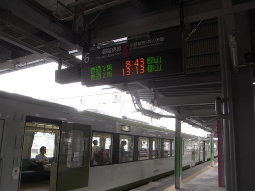
9:03 江田駅到着。
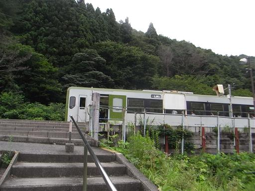
背戸峨廊の入口までしばらくは車道を歩いていく。
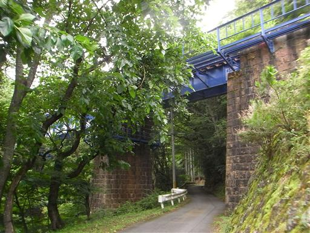
背戸峨廊の入口に到着。
奥入瀬ほどではないが、それなりに有名な渓谷だ。
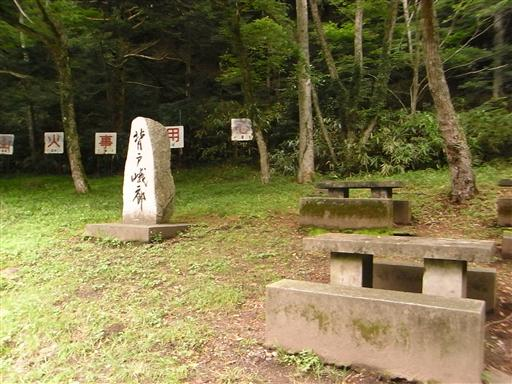
渓谷内は遊歩道が整備されているが、登山靴でないと少々厳しそうな道だ。
盛夏なのに、周りにはそこそこ歩いている人がいる。

全体的に水量は少なく迫力はあまりないが、景観はなかなかのものだ。
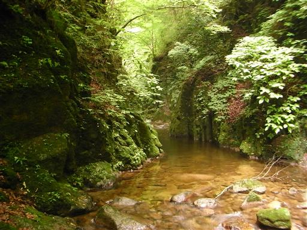
淵となっているところは、水面に景色が映っている。
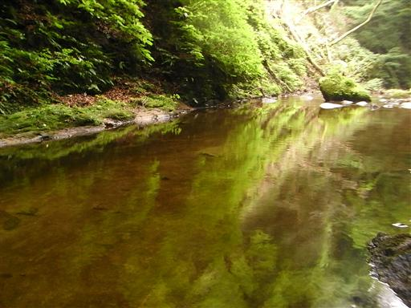
廻り淵。この辺りから少しずつ急流が見られるようになってくる。
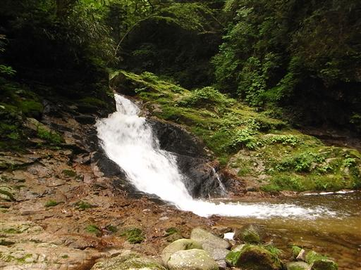
付近にはメタカラコウの花が咲いている。
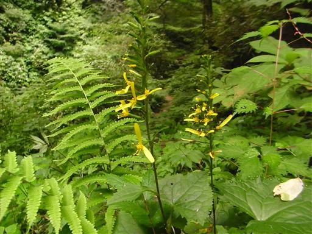
苔生した東屋。
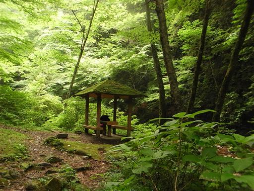
トッカケ滝。トッカケとはこの地方の方言で最初の場所の事を表すらしい。
一番最初に現れる滝で、高さもこれが一番らしい。
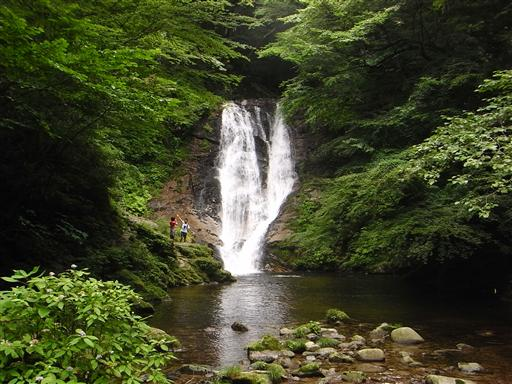
近くから見るとなかなか迫力がある。
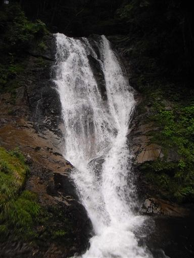
所々に太い幹の老木が見られる。
何やら説明板が設置されているが、高いところにありすぎて読むことはできない。
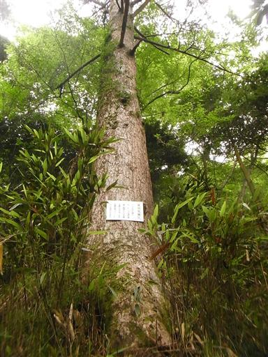
釜ん淵。奥に見える穴が釜のように見えることから名付けられた。
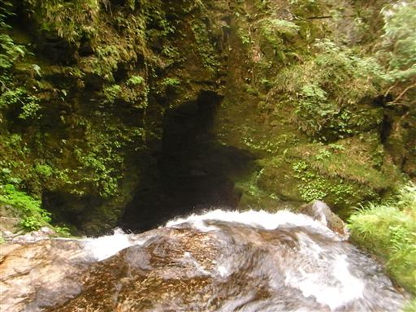
道端に咲くツユクサ。ずいぶん不思議な形をした花だ。
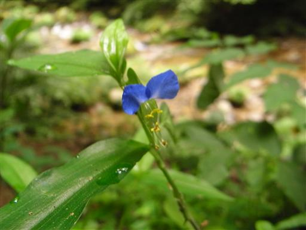
ミズヒキソウ。こちらの花も不思議な形をしている。

イワタバコ。渓谷のあちらこちらで咲いている。
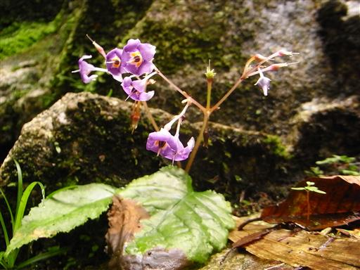
オオバギボウシ。大柄な花だ。
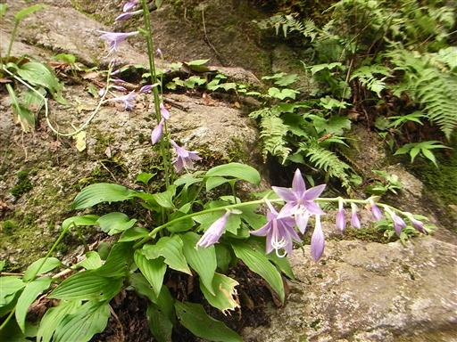
道は沢沿いをへつるように付けられている。足場は非常に小さい。
完全に整備された遊歩道ではなく、このような場所もありなかなか面白い。
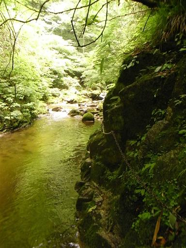
日が差してくると、木々や水面が照らされて非常にきれいだ。
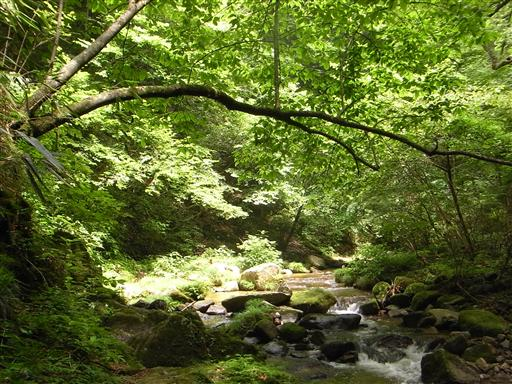
片鞍滝。乗馬用の鞍に似ていることから名付けられた。
高さはそれほどでもないが、立派な滝だ。
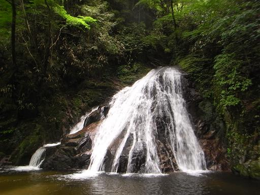
しばらく歩くと団体登山者に追いついてしまった。
全体で30名を超える大パーティだ。
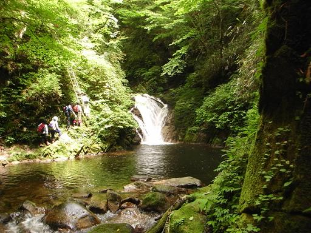
龍の寝床。滝壷が黒々としていて、龍が出てきそうな雰囲気から名付けられた。
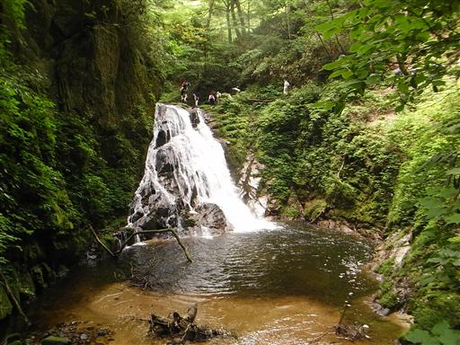
上から覗き込むと確かに不気味なくらい黒々としている。
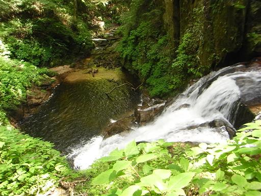
心字の滝。「心」の字に見えるらしいが、どこから見たらそう見えるのか良く分からない。
背戸峨廊という名前も、渓谷内の不思議な名前の滝も
この渓谷をこよなく愛した詩人・草野心平が名付けたものらしい。
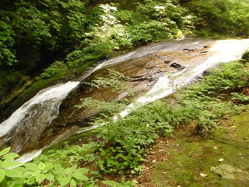
急な傾斜になっているところでは、梯子が設けられている。
こうなるともう立派な登山道だ。
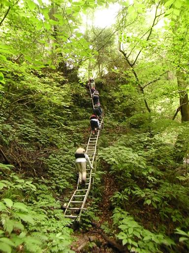
まるで貝殻のような形をしたキノコ。
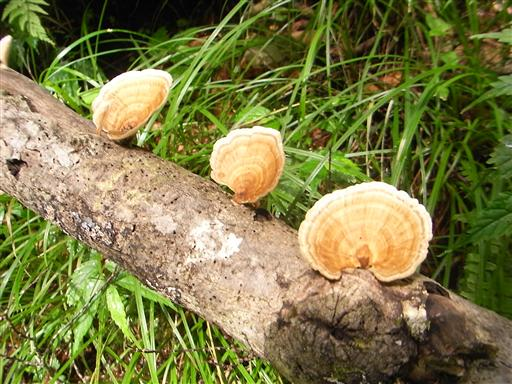
渓谷の一番最後にあるのが三連滝。
滝は一つしか見えないが、奥にあと2つの滝があるらしい。
ここで道は渓谷から離れ未練が残るので、「みれん滝」と読む。
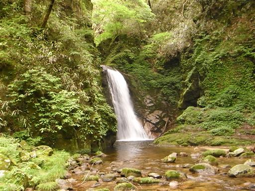
黄緑色のもみじの葉が光っている。
紅葉の時期のこの渓谷は、また一段ときれいになるだろう。
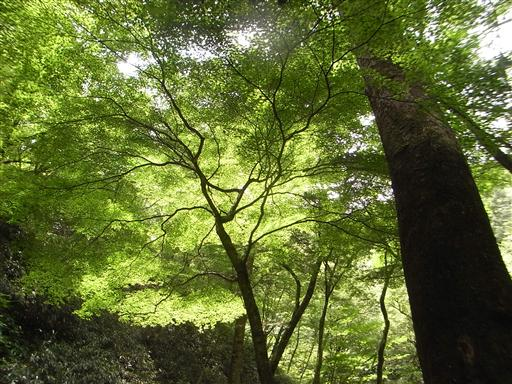
帰りは沢から離れ平凡な道を歩いていく。
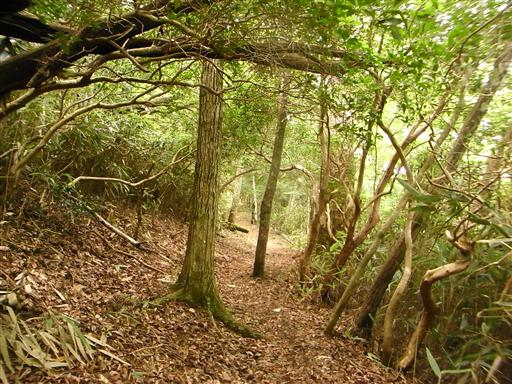
13:18 江田駅到着。
電車を待っていると小雨が降ってきた。歩いている途中に降られなくて良かった。
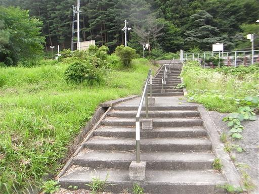